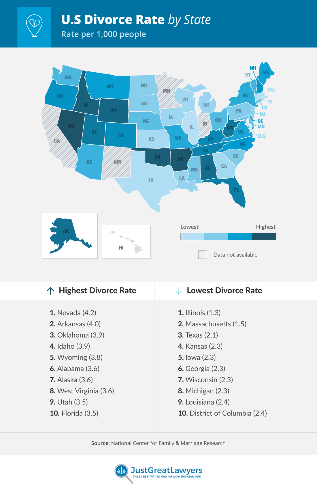
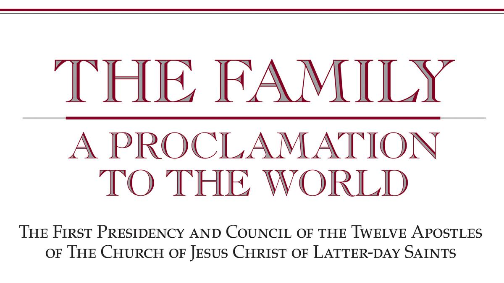

Family Project 100
Welcome to my Family 100 Project
The Warm, Happy Marriage: Cold, Hard Facts to Consider (Chapter 7)
Warm and Cold of Marriage, May 24, 2022
No matter the relationship, you will have warm and cold days in that relationship, and you must understand how to overcome those challenges and seek serenity in a world full of stormy days. This blog article is about how you can find that serenity even with challenges ahead. The first principle that you should be aware of would be that you can't avoid those frustrating days altogether, it's better to have a plan for when they do come than to plan for them to never come.
When You look at something as grim as divorce statistics, you can see why marriage is on the lower end of the spectrum, as shown in the chart below:
You will see that different states have high or lower divorce rates, and its become more common to get a divorce in recent years. Although how do you avoid such a devastating action between two parties? Having God with you can be a start, although building that strong connection with your partner to understand them when they are struggling.
Some people might try to say that marriage is confining to the spirit, but when it is done correctly, you'll see that it is a way for two souls to connect on a new level that most people who are cohabitating cannot quite get because it is so easy to leave without any tethers to help you keep that relationship working and growing. When you follow the principles about dating and keep the romance alive. This can help you avoid this trap of feeling like you're in a rut with someone who doesn't love you. Another misconception that can be read is that men get more joy out of a marriage than women, this information is false and according to a study by stack and Eshleman, they found that both partners gain a mental benefit from being in a marriage. One way that you can avoid more cold than warm in a relationship comes to an understanding that when you both focus on the warm, the good, and the joy, you will have more of that, joy. This isn't a full-proof recipe, nor does it give an immediate way to fix problems, but when you're committed to someone and take the time to build a good
Popular Posts
-

The Proclamation
Chapter 29 -
 The Eternal Family
The Eternal Family
Chapter 32 -
 Defending Family
Defending Family
Chapter 34 -
The ABCs of Romance
Chapter 2 -
Foundational Processes for an Enduring, Healthy Marriage
Chapter 3 -
The Warm, Happy Marriage: Cold, Hard Facts to Consider
Chapter 7 -
Faith in Family Life
Chapter 18
Tags
Family Eternity Jesus Christ Latter-day Saints Eternal Familys Purity Children Work